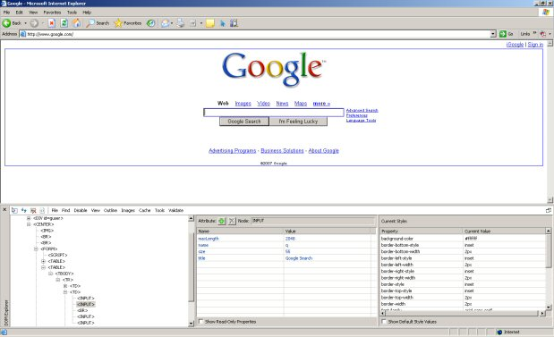

Watir User Guide |
"Watir" (pronounced water) stands for "Web Application Testing in Ruby". Watir is an automated test tool which uses the Ruby scripting language to drive the Internet Explorer web browser. Watir is a toolkit for automated tests to be developed and run against a web browser.
Watir will drive web applications that are served up as HTML pages in a web browser. Watir will not work with ActiveX plugin components, Java Applets, Macromedia Flash, or other plugin applications. To determine whether Watir can be used to automate a part of a web application, right click on the object and see if the View Source menu option is available. If you can view the HTML source, that object can be automated using Watir.
To use the tool, you should have a basic understanding of:
Watir runs on Windows machines and works with the Internet Explorer web browser. Watir has been developed and tested using Ruby 1.8.2-14 and later on Windows 2000 and XP.
On Windows, the simplest way to install Ruby is to download and run the One Click Windows Installer.
Once Ruby is installed on your machine, you can run files with
the ".rb" extension by clicking them or running them from the command
line. Running from the command line is recommended if you want to read
program output, including test results and error messages.
The way to install Watir is to use the gem: "gem install watir". You don't have to download the gem first. Ruby's gem system will automatically find it on the web, download it and install it. (Ruby gems are similar to Perl's CPAN, if you know what that is.) Watir's gem includes libraries, the unit tests and the rdoc, but not the examples or the rest of the Watir documentation. It is convenient for setting up a new machine to run Watir scripts that you've already developed.
Development VersionThis is the latest version that is currently being worked on by the Watir development team. It is on the cutting edge, so it may have problems that haven't been fixed yet, or partially completed new features. Unless you really want the latest and greatest version, it is recommended to use a regular Watir release. Go to Development Builds page for instructions.
To run the unit tests:
Running on Windows XP and Internet Explorer prevents you from running the unit tests? If you are using Windows XP with Service Pack 2, you may not be able to run the tests unless you enable active content.
If the website you are testing has active content, the IE browser will "block" the content. To enable active content perform the following:
Warning! Allowing active content to run in files on your computer is a security risk. You only need that enabled for running unit tests. Do not forget to disable it after unit tests are finished.
Seeing a Runtime Error running the unit tests? There have been problems with a package in the Ruby 1.8.1-13 release. Try either a newer version, or an older version such as 1.8.1-11 or 1.8.1-12
To run the Watir example tests:
To inspect googleSearch.rb with a detailed explanation,
read the Watir
Example Test Case guide.
These examples are not included with the gem install.
The goal of this user guide is to help you get started writing test cases quickly. Each section below describes the methods for driving a web application. Select the ones you need for each page of your web application based on the content of each page in the application.
Plan what you need to get Watir to do before you begin scripting. Open your web browser with the application under test in front of you, and pay close attention to the objects on that page. What text fields require entries? What buttons need to be pushed? What links need to be clicked on? It sometimes helps to write out the steps it will take to exercise a test first, and then filling in the Watir scripting code to satisfy each of those steps.
Microsoft has an extension for Internet Explorer that is a great addition to any tester's toolkit and is a great help when scripting web pages using Watir. The latest version as of now is beta 3 which you can download here.
The Internet Explorer Developer Toolbar provides several features for exploring and understanding Web pages. These features enable you to:To use this extension, in IE6 you can turn it on through the View Menu > Explorer Bar > IE DOM Explorer In IE7, it's under the Tools icon > Toolbars > Explorer Bar > IE DOM Explorer
Navigate to "Google Search", and you should see something like the following.
In this case you can see the name attribute of the field to use in your scripts. Watir can use different attributes of a tag to manipulate that object, so it is important to know what they are. In some cases the attributes are not explicit in the tag such as the "text" attributes.
To start developing a test:
You will notice we've chosen to name the variable name ie used in Watir test scripts for the Internet Explorer browser.You could call it whatever you wish, but we use "ie" for ease of use. This variable tells the Watir library to exercise test scripts against an instance of the Internet Explorer web browser.
In Ruby, think of programming in terms of objects and messages. Watir was also developed with objects and messages in mind. If you think of the ie variable as an object, you can send messages to it. Think of objects as nouns. When you start up Internet Explorer, the operating system starts the program which creates an instance of the Internet Explorer web browser. You refer to this Internet Explorer browser instance as a thing. If you send a message to that object, it will respond to that message if it recognizes it.
Think of the messages as verbs. In Ruby, you send a message to an object by separating the object you are calling from the message you are sending to it with a dot. For example, dog.bark would tell the object dog that it must bark.
This isn't very specific though. What dog should bark? In the Watir world, you could identify the test area to be our yard. Like ie, treat it as an object with attributes containing other objects with attributes. For example, in our yard, there are two dogs: Heidi and Megabyte. Each of these dog objects have attributes that identify them. They have names, breeds, shapes and sizes and colors. To be more specific, and interacting with them the Watir way, you could send the message "bark" to the dog Heidi like this: yard.dog(:name, "Heidi").bark. This says in Watir syntax: in the yard, identify the dog Heidi by her name attribute, and send her the "bark" message. The expected outcome would be Heidi responding to the message by barking.
When you develop test scripts with Watir, you interact with objects on a web page by sending them messages. Like the yard example, the Internet Explorer browser itself contains objects. You can access these objects within an Internet Explorer browser instance by identifying them by different attributes. Just like in the dog example, above, you must be very specific when you send messages to objects on a web page. You must also be able to identify objects on a web page by using a variety of different attributes due to the diversity in how tags are declared by different application developers. With Watir, identify objects and send them messages by using the dot notation. For example ie.button, narrows down the type of object to send a message to. ie.button(:value, "Click Me").click identifies the object on the page as a button within the instance of Internet Explorer that has the value attribute (caption) "Click Me". When you send the message (the verb) click, Watir interprets and tells Internet Explorer to click.
The Watir syntax is shown below with three views. One is the view that we see objects on a web page while viewing them in a web browser. The next view is an example of the Watir code that would be needed to automate an action using that web page object. The third view is the object on the web page shown in its HTML form. This is the way it looks when we view the source of a web page, or open the file in a text editor.
To use the Watir tool, first enter the following in your test script:
This allows our test script to use the Watir tool.
To create a test instance of Internet Explorer, enter the following in your test script:
Watir sends a message to Internet Explorer, telling to create a new instance of itself, and assigns that instance to "ie".
To create an instance of Internet Explorer and navigate to the site with one statement:
Watir uses the start method to both create a browser instance and navigate to a site.
To use the ie = IE.new syntax in versions 1.0.1 through 1.0.3, you need to include the Watir module after the require 'watir' statement:
You can then create a new instance of Internet Explorer like this:
To direct your test script to the web application you are testing, enter the URL in this command:
In the example above, enter in your application's URL in place of mytestsite.
Watir sends the goto message to Internet Explorer, telling it to enter the address you entered as a method argument in the Address bar, and to direct the browser to that site.
These examples will demonstrate how to use Watir to interact with objects on the page.
You can use Watir to click hyperlinks in a variety of ways. Watir can click links by looking at the link text you see in the browser (text attribute) or by looking at the attributes available in the HTML tag. Attributes in the tag can include: name, href (we refer to it here as URL) among others.
Here is an example using a link to the "Pickaxe" book by the Pragmatic Programmers:
What you see in the web browser:
This is the Watir code you need to click a hyperlink using the text attribute:
What you see in the HTML source (attribute highlighted):
Watir code to click a link using the URL attribute:
This is the tag in the HTML source with the attribute highlighted:
Watir sets or clears checkboxes based on the name and value attributes provided in the checkbox HTML tag.
What you see in the web browser:
Watir code to set a checkbox using the name attribute:
Watir code to clear a checkbox using the name attribute:
This is the tag in the HTML source with the attribute highlighted:
We can also use both attributes:
Watir code to set a checkbox using both the name and value attributes:
This is the tag in the HTML source with both the attributes highlighted:
We can also use the clear method using both of these attributes.
Watir sets or clears radio list items based on the name and value attributes provided in the radio HTML tag.
What you see in the web browser:
Watir code to set a radio list item using the name attribute:
Watir code to clear a radio list item using the name attribute:
This is the tag in the HTML source with the attribute highlighted:
We can also use both attributes:
Watir code to set a radio list item using both the name and id attributes:
This is the tag in the HTML source with both the attributes highlighted:
We can also use the clear method using both of these attributes.
Watir selects an item in a selection box (or dropdown box) based on the name and option value attributes provided in the select HTML tag. Or we can identify it based on the name attribute, and the value we want to set.
What you see in the web browser:
Watir code to set a select box item using the name attribute and the value to set:
This is the tag in the HTML source with the attributes highlighted:
Watir can also clear a select box:
Watir sets text in an input field on a web page based on the name and id attributes provided in the input type = text HTML tag.
What you see in the web browser:
Watir code to set the field with the text string: "Watir World" using the name attribute:
This is the tag in the HTML source with the attribute highlighted:
Watir can also clear a text field:
In web applications, we generally submit information we have entered or selected in the web page by clicking hyperlinks (see above example), clicking buttons, or images that look and act like HTML buttons, or by hitting Enter/Return on our keyboard.
Watir clicks buttons on a web page based on the name, value (caption) and id attributes provided in the input type = button HTML tag. Some buttons are images which will show as input type = image in the HTML tag. These buttons can also be accessed by their src attribute.
What you see in the web browser:
This is the Watir code you need to click a button using the value attribute:
This is the tag in the HTML source with the attribute highlighted:
This is the Watir code you need to click a button using the name attribute:
This is the tag in the HTML source with the attribute highlighted:
Watir can click image buttons on a web page based on the attributes above: name, id, value as well as the src HTML tag.
What you see in the web browser:
This is the Watir code you need to click a button with an image using the src attribute as a regular expression:
In this case we're looking for a button with doit as part of the src attribute.
This is the tag in the HTML source with our partial match in the src attribute highlighted:
Forms aren't visible through the browser, but are used a lot in web applications. To find them, look at the HTML source for <form></form> tags. Watir can submit forms in a variety of ways.
Watir can submit HTML buttons on a web page contained in a form based on the name, value (caption) and id attributes provided in the input type = submit HTML tag.
This is the Watir code you need to click a button that will submit a form using the value attribute:
This is the tag in the HTML source with the attribute highlighted:
We can also just submit the form as shown below in the Forms With No Buttons examples.
There may be input fields on a web page, but no button to submit. Instead, they will allow you to hit Enter on your keyboard. When there is no button to submit the data, we can just submit the form itself.
Watir can submit a form by identifying it by its name, action and method attributes.
What you see in the web browser:
Watir code to submit the form using the name attribute:
This is the tag in the HTML source with the attribute highlighted:
Watir code to submit the form using the action attribute:
This is the tag in the HTML source with the attribute highlighted:
Many web applications use frames. If you are having trouble accessing objects on a web page, be sure to check to see if the application is using frames. To find out, view the source of the page. It will look something like this:
In the HTML above, we have a menu frame on the left that is 120 pixels wide, and a main frame that makes up the rest of the page.
You can use Watir to find out if your page has frames:
This is a good method to use with IRB. It prints out the number and the names of the frames in the current page.
Watir allows access to frame objects by identifying them by their name attribute. This is the form that Watir takes to access a frame:
To access individual objects within that frame, you prefix the object using the Watir code above. If we had a hyperlink in the menu frame: Click Menu Item, we could click it like this:
Sometimes a web page that is referenced by the frame src= attribute is also a page that contains a frameset tag. This is a nested frame. To deal with this, simply access the nested frame like this:
Some web applications will have popup windows or new windows that contain HTML. Watir has an attach method that allows you to access and control the new window. If you click a button or link that opens a new window, you can attach to it by identifying the window by its URL or by the Window title:
You can use a regular expression on URL or title like this:
Note: be careful to not assign the new window to your "ie" variable. Give the attached window variable a different name.
How do we tell whether the test passed or failed? It is good practice to use a verification point in your test case.
To create a valid test case, we need to use some sort of validation. It isn't enough to have a sequence of events without validation in a test script. Watir can check the state of objects in the Internet Explorer DOM, and can check to see if a page contains the objects that are expected for the test to pass.
A simple verification point is to use the Watir method contains_text:
In our test, imagine we have gone through a sequence of steps to reach the desired point. This is a web page that contains the following text:
Our test will pass if this is what is displayed on the page at our verification point.
Watir code to check that the text exists on the web page contains_text method:
We will need to add some scripting code to validate that this occurred, or use Ruby's test::unit testing framework.
Scripting code to let us know whether the test passed or not:This is what the scripting code above does:
Using xUnit assertions can be a more powerful way of validating test results. (For a good explanation of assertions, visit this NUnit page which explains assertions.)
Ruby has an xUnit framework called test::unit that we can use with Watir. The test::unit API is avaiable in the project RDoc.
Note: Look at the Watir examples and unit tests for executable examples.To use test::unit in your test scripts, enter the following in your test script:
We create a new class for our test suite which is inherited from the test::unit TestCase class.
Within our test case class, we need to declare test cases as methods
like this:
Test case method names must be prefixed with the word test.
When we run the test script from the command line, test::unit uses reflection to go through our test class and execute all the test cases declared in it. The runner by default executes the test cases randomly, so if you need to chain test cases, prefix letters from the alphabet or numbers after the "test" prefix to force them to run in order. ex. "test_a_mytest".
Note:If you use numbers in your method names, note that 1 2 3 4 5 6 7 8 9 10 11 12 will be executed in this order: 1 10 11 12 2 3 4 5 6 7 8 9. Instead, use this format: 01 02 03 04 05 06 07 08 09 10 11 12. ex. "test_01_mytest", "test_02_mytest", "test_03_mytest" will run in the order expected.
The test case class with test cases defined will look like this:
Watir can support assertions by wrapping Watir methods within an assert:
Watir can test for many different states of objects. We can use assertions to check of objects exist, are enabled or disabled, or any other state that the DOM tells the web browser about an object.
If you would like to chain test cases in a single test::unit class, and use one Internet Explorer instance, use either a class variable "@@ie", or a global variable "$ie". This allows the test script to use the same Internet Explorer instance for all the test cases.Note: use global variables with caution.
The method names setup and teardown are reserved for test::unit. If you would like to use setup and teardown functionality, simply use those as method names for the actions you want executed before and after executing each test case.
Have a question? Check the Watir FAQ or search
the Watir mailing list archives using Google. Search by entering the
following
site:rubyforge.org "[Wtr-general]" your search term
If you wanted to search for information on JavaScript popups, you would
enter this:
site:rubyforge.org "[Wtr-general]" javascript popups
JavaScript generated popups such as Alert boxes, Windows Security popups, and other popups that are not contained in a web browser are not accessible the same way HTML pages are. There has been some experimental code packaged with Watir to deal with popups with limited success. A good popup handling solution is being worked on and will be included in a future Watir release. In the mean time, AutoIT is installed with Watir. Look at "jscript_test.rb" in the unittests directory, and search the mail list archives for more information.
Watch for a Watir solution in a future release.
Run the tests with a "-b" option if you don't want the browser to be visible. ex. myTest.rb -b
Not all HTML tags will look the same. If you have difficulty getting Watir to interact with an object on your web page, try the Watir method with different attributes. The tag may come with one attribute, or it may come with several. If you still have trouble, see if the developers will add a name attribute to the offending tag.
If you are having difficulty getting Watir to interact with an object, try using the method with different tag attributes. Tag declarations in HTML are varied. Some developers use tools that generate HTML, and there are many variations on tag attributes. Watir is very flexible and offers several variations on each method. There are also attributes that are part of the DOM within Internet Explorer. Anything the DOM can see, you can access using Ruby. If you have exhausted the attributes on a tag and Watir still won't interact with it, send an email to the wtr-general mailing list. The Watir development team will help out, and if needed, add support for that situation within Watir.
In some situations, you may not know what the tag attributes of an HTML object are. They may be missing, or the tag attributes might be dynamically generated. Some web architectures dynamically generate tags, and the attributes might change each time you run a test. To work around this, try the following:
Access Element Using Index
Elements on a web page can be accessed by where they appear on a page. If an element you want to interact with always appears in the same place, you can access it by a one-based index. Here's an example using a radio list:
What you see in the web browser:
Watir code to set the first radio list item using its index:
Watir code to clear the second radio list item using its index:
Watir supports regular expressions in method calls.
Here is an example using the link method to click a hyperlink using the url attribute:
This will click the link that matches shtml.
Watir supports div tags. Some web applications use one div for one state of the application, and another for a different state (such as error or success messages). Watir can check the status of the div to allow for tests on pages using CSS as part of the application.
Check out the unit test css_test.rb for usage.
To run a test concurrently, check out concurrent_search in the examples directory for an example.
Watir now supports JavaScript treeviews such as the Joust tree view. The Watir FAQ has an example you can follow.
Watir now handles multiple browser windows with the attach method.
Watir now has a mechanism to support file uploads. Use the file_field method. Run and view the Ruby source in:"filefield_test.rb" in the unittests folder for usage.
Watir has RDocs generated which describe the classes and methods in the Watir tool. To view the Watir RDoc, go to the rdoc directory and click on index.html
Use Ruby's Interactive Command Interpreter to test out script ideas. You can try out test script ideas interactively with irb.
To start IRB on Windows, select Start > Run and type "irb" in the Open field. Click "OK", and a DOS console should open with a command prompt that looks like this: irb(main):001:0>
Use the Watir library and enter commands to start driving a web browser interactively:
To find out what objects are on a page you are writing a test script for, use IRB to get instant feedback.
The show_all_objects method is a useful way to identify the attributes of objects you will need to use in a test script.
The objects on the page are shown with their attributes such as name, id, value, alt, src. You can use these attributes to uniquely identify the objects needed for a test script. In our example above, we have two objects. A text field named test_text and a button (submit) named test_button.
The flash method can be used to test whether you have identified the object correctly. The flash method causes an object in the web browser to flash yellow ten times.
This would cause the text field with the name attribute "test_text" to flash yellow ten times. This is an effective way of testing whether you have identified the right object, and if you have used the right attribute. Using this in IRB is a quick way of finding out what objects can be used in a test script before commiting the script to a file.
Instance an object that has been created for use by a program and is stored in memory
Message an action descriptor that can be sent to an object. If the object recognizes the message, it will respond and display related behavior.
Object something that contains attributes and displays behavior according to what messages have been sent to it.
Ruby object-oriented scripting language
Watir Web Application Testing in Ruby
Questions? Comments? The Watir development team like to hear your comments and suggestions for improvement. Email questions and suggestions to the wtr-general mailing list.